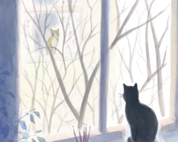

芷新蕾
巴厘岛在国人中的火热程度想必不用多做解释，由于签证方便，机票价格合理，巴厘岛成为很多朋友们旅游、度假、蜜月的选择地。巴厘岛迷人的自然风光、别样的民族风情以及良好的路况同样适合环岛骑行。总的来说，巴厘岛的骑行线路和海南岛非常相似，可分东、西、中三线。 西线：Kuta（库塔）—Tabanan—Tanahlot（海神庙）—Antasari—Pekutatan—Negara，约135km；Negara—Pulaki—Lovina（罗威纳海滩）—Singaraja，约125km 东线：Singaraja—Pojok Batu—Abang—Denpassar（登巴萨）—Kuta（库塔），约175km 中线：Kubutambahan—Kintamani—Tirta Empul—Ubud—Denpassar（登巴萨）—Kuta（库塔） 理论上讲，贯穿巴厘岛南北海岸的公路有很多条，但是这一条途经京打马尼山、巴杜尔湖、圣泉寺、圣猴森林公园等景点，值得推荐。
马可
口袋里揣着去南极的船票以后才知道兴奋过度的辗转难眠是这样的,我一边提醒甜甜我们该休息了，一边望着窗外，午夜12点，乌斯怀亚的天边依然有云彩。可是一躺下，一闭眼，就是一片冰山大海。脑子里根本停不下来，画面不断的切换：鲸鱼的大尾巴浮出水面，成千上万的企鹅接踵而至；海豹慵懒的享受着日光浴，信天翁在天空飞旋夺食…… 身未行，心已至。实在是睡不着，一闭着眼睛，就好像有无数个小人在眼皮地下用一根根火柴棍撑开，并且全部点燃，使得精神抖擞的腾的一下像火苗飞窜，困意如缕缕青烟飘散。
黄韵英
生命本来就是一个美好的存在,在这个繁忙的世界里。我们应该被各种香气所包围，给予自己一个最放松的小角落，随着淡淡的清香，去聆听自己心灵的声音，去感受这个世界所赋予我们的美好。世界就在那里，所以我去了。
|  |
旅人
父亲眼里的世界:年轻时气质轩逸，穿着一身黑色的呢装，在书画中留下了对世界的理解！父亲眼里的世界:生命中最珍贵的是家的存在，灰暗的墙上挂着他对世界美好的追求，摆放的椅子是孩子们成长的记忆，箱子里珍藏着对生命时光的留念！ 父亲眼里的世界:每天的太阳和月亮照耀着大地，日子一天天过着，窗外的世界充满着灵魂透气的缝隙，灶台上火苗跳动着生命经历的回想
乐一
天黑了还未到尽头,没有风也没有灯。心绷成了一张弓，雨滴砸落的如此及时。平缓了急促的呼吸，不是迷醉也非颓废，只是路又穿了黑衣。一夜浅睡梦却紧紧相随，焦急的追赶着奔跑的灵魂，只望其背却魅惑无比。雀鸟的啼鸣拽梦出囫囵，路依然明朗端庄如昔，继续踩着不乱的节奏加力。
杜思威
大概每个人都向往过海边的生活：面朝大海，春暖花开。不仅仅是海子的一句诗，它成为一种永恒的理想。伴着涛声入眠，循着还未苏醒，忘却恼人琐事，看看海，等等日出，夜晚赏赏星光，海风拂面，海水亲吻脚趾。 有人说，生活在海边的人是幸福的，也有人说，是浪漫的，大海也把幻想和梦给了你。 漫天朝霞中，看着初生的太阳升起，带着朝露与期待，开始一天的生活。一天中，无处不在的光线与色彩，遍布身上的每一个毛孔，每一个细胞。